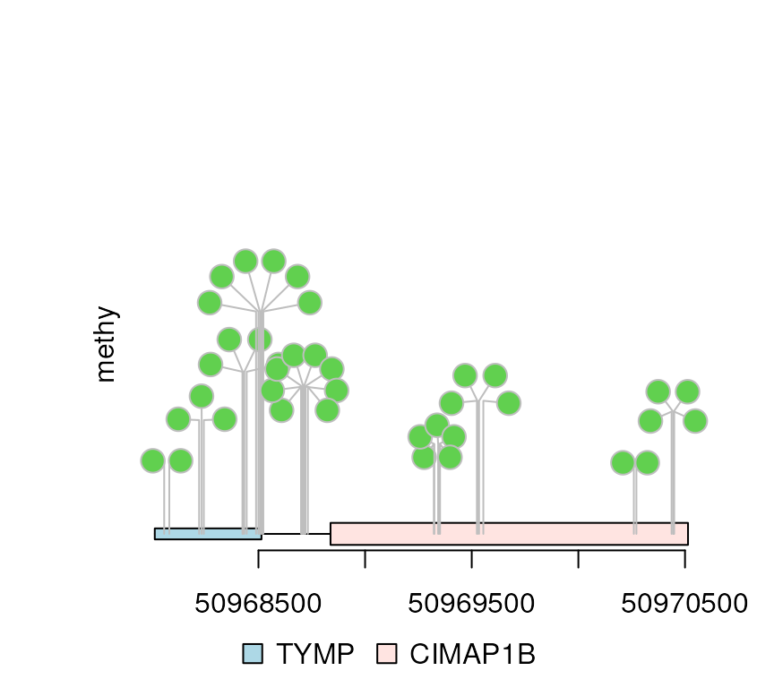

trackViewer Vignette: dandelionPlot
Jianhong Ou, Lihua Julie Zhu
4 April 2021
dandelionPlot.RmdAbstract
Visualize high dense methylation or mutation data along with annotation as track layers via Dandelion Plot.
Dandelion Plot
Sometimes, there are as many as hundreds of SNPs invoved in one gene. Dandelion plot can be used to depict such dense SNPs. Please note that the height of the dandelion indicates the desity of the SNPs.
library(trackViewer)
library(TxDb.Hsapiens.UCSC.hg19.knownGene)
library(org.Hs.eg.db)
library(rtracklayer)
methy <- import(system.file("extdata", "methy.bed", package="trackViewer"), "BED")
gr <- GRanges("chr22", IRanges(50968014, 50970514, names="TYMP"))
trs <- geneModelFromTxdb(TxDb.Hsapiens.UCSC.hg19.knownGene,
org.Hs.eg.db,
gr=gr)
features <- c(range(trs[[1]]$dat), range(trs[[5]]$dat))
names(features) <- c(trs[[1]]$name, trs[[5]]$name)
features$fill <- c("lightblue", "mistyrose")
features$height <- c(.02, .04)
dandelion.plot(methy, features, ranges=gr, type="pin")
Change the type of Dandelion plot
There are one more type for dandelion plot, i.e., type “fan”. The area of the fan indicates the percentage of methylation or rate of mutation.
methy$color <- 3
methy$border <- "gray"
## Score info is required and the score must be a number in [0, 1]
m <- max(methy$score)
methy$score <- methy$score/m
dandelion.plot(methy, features, ranges=gr, type="fan")
methy$color <- rep(list(c(3, 5)), length(methy))
methy$score2 <- (max(methy$score) - methy$score)/m
legends <- list(list(labels=c("s1", "s2"), fill=c(3, 5)))
dandelion.plot(methy, features, ranges=gr, type="pie", legend=legends)
Change the number of dandelions
## Less dandelions
dandelion.plot(methy, features, ranges=gr, type="circle", maxgaps=1/10)
## More dandelions
dandelion.plot(methy, features, ranges=gr, type="circle", maxgaps=1/100)
Users can also specify the maximum distance between neighboring dandelions by setting the maxgaps as a GRanges object.
maxgaps <- tile(gr, n = 10)[[1]]
dandelion.plot(methy, features, ranges=gr, type="circle", maxgaps=maxgaps)
Add y-axis (yaxis)
Set yaxis to TRUE to add y-axis, and set heightMethod=mean to use the mean score as the height.
dandelion.plot(methy, features, ranges=gr, type="pie",
maxgaps=1/100, yaxis = TRUE, heightMethod = mean,
ylab='mean of methy scores')
yaxis = c(0, 0.5, 1)
dandelion.plot(methy, features, ranges=gr, type="pie",
maxgaps=1/100, yaxis = yaxis, heightMethod = mean,
ylab='mean of methy scores')
Session Info
R Under development (unstable) (2021-03-18 r80099) Platform: x86_64-pc-linux-gnu (64-bit) Running under: Ubuntu 20.04.2 LTS
Matrix products: default BLAS/LAPACK: /usr/lib/x86_64-linux-gnu/openblas-pthread/libopenblasp-r0.3.8.so
locale: [1] LC_CTYPE=en_US.UTF-8 LC_NUMERIC=C
[3] LC_TIME=en_US.UTF-8 LC_COLLATE=en_US.UTF-8
[5] LC_MONETARY=en_US.UTF-8 LC_MESSAGES=C
[7] LC_PAPER=en_US.UTF-8 LC_NAME=C
[9] LC_ADDRESS=C LC_TELEPHONE=C
[11] LC_MEASUREMENT=en_US.UTF-8 LC_IDENTIFICATION=C
attached base packages: [1] grid parallel stats4 stats graphics grDevices utils
[8] datasets methods base
other attached packages: [1] httr_1.4.2
[2] VariantAnnotation_1.37.1
[3] Rsamtools_2.7.1
[4] Biostrings_2.59.2
[5] XVector_0.31.1
[6] SummarizedExperiment_1.21.1
[7] MatrixGenerics_1.3.1
[8] matrixStats_0.58.0
[9] org.Hs.eg.db_3.12.0
[10] TxDb.Hsapiens.UCSC.hg19.knownGene_3.2.2 [11] GenomicFeatures_1.43.8
[12] AnnotationDbi_1.53.1
[13] Biobase_2.51.0
[14] rtracklayer_1.51.5
[15] trackViewer_1.27.10
[16] Rcpp_1.0.6
[17] GenomicRanges_1.43.3
[18] GenomeInfoDb_1.27.8
[19] IRanges_2.25.6
[20] S4Vectors_0.29.11
[21] BiocGenerics_0.37.1
loaded via a namespace (and not attached): [1] colorspace_2.0-0 rjson_0.2.20 ellipsis_0.3.1
[4] rprojroot_2.0.2 biovizBase_1.39.0 htmlTable_2.1.0
[7] base64enc_0.1-3 fs_1.5.0 dichromat_2.0-0
[10] rstudioapi_0.13 bit64_4.0.5 fansi_0.4.2
[13] splines_4.1.0 cachem_1.0.4 knitr_1.31
[16] Formula_1.2-4 cluster_2.1.1 dbplyr_2.1.0
[19] png_0.1-7 grImport_0.9-3 graph_1.69.0
[22] BiocManager_1.30.12 compiler_4.1.0 backports_1.2.1
[25] lazyeval_0.2.2 assertthat_0.2.1 Matrix_1.3-2
[28] fastmap_1.1.0 htmltools_0.5.1.1 prettyunits_1.1.1
[31] tools_4.1.0 gtable_0.3.0 glue_1.4.2
[34] GenomeInfoDbData_1.2.4 dplyr_1.0.5 rappdirs_0.3.3
[37] pkgdown_1.6.1 rhdf5filters_1.3.4 vctrs_0.3.7
[40] debugme_1.1.0 xfun_0.22 stringr_1.4.0
[43] lifecycle_1.0.0 ensembldb_2.15.2 restfulr_0.0.13
[46] InteractionSet_1.19.0 XML_3.99-0.6 zlibbioc_1.37.0
[49] scales_1.1.1 BiocStyle_2.19.2 BSgenome_1.59.2
[52] ProtGenerics_1.23.7 ragg_1.1.2 hms_1.0.0
[55] rhdf5_2.35.2 AnnotationFilter_1.15.0 RColorBrewer_1.1-2
[58] yaml_2.2.1 curl_4.3 memoise_2.0.0
[61] gridExtra_2.3 ggplot2_3.3.3 biomaRt_2.47.7
[64] rpart_4.1-15 latticeExtra_0.6-29 stringi_1.5.3
[67] RSQLite_2.2.5 highr_0.8 BiocIO_1.1.2
[70] desc_1.3.0 plotrix_3.8-1 checkmate_2.0.0
[73] filelock_1.0.2 BiocParallel_1.25.5 rlang_0.4.10
[76] pkgconfig_2.0.3 systemfonts_1.0.1 bitops_1.0-6
[79] evaluate_0.14 lattice_0.20-41 Rhdf5lib_1.13.4
[82] purrr_0.3.4 GenomicAlignments_1.27.2 htmlwidgets_1.5.3
[85] bit_4.0.4 tidyselect_1.1.0 magrittr_2.0.1
[88] R6_2.5.0 generics_0.1.0 Hmisc_4.5-0
[91] DelayedArray_0.17.10 DBI_1.1.1 pillar_1.5.1
[94] foreign_0.8-81 survival_3.2-10 KEGGREST_1.31.1
[97] RCurl_1.98-1.3 nnet_7.3-15 tibble_3.1.0
[100] crayon_1.4.1 utf8_1.2.1 BiocFileCache_1.15.1
[103] rmarkdown_2.7 jpeg_0.1-8.1 progress_1.2.2
[106] data.table_1.14.0 Rgraphviz_2.35.0 blob_1.2.1
[109] digest_0.6.27 textshaping_0.3.3 munsell_0.5.0
[112] Gviz_1.35.5